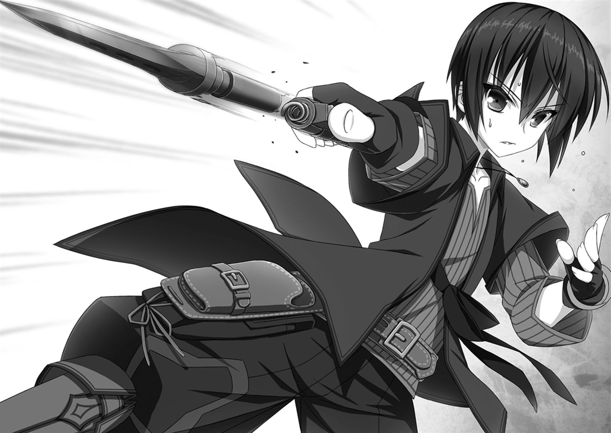

Resumen
Autor: Meikyou Shisui
Ilustrador: Yameta Takashi (止田卓史)
Comentarios
Gun-ota, es otro de esos mangas no tan populares hasta ahora que se agragan a mi lista, es un manga ecchi comedia, que se enfoca en las aventuras de Lute, a diferencia de otros protagonistas quiza, su poder magico es muy bajo, por lo cual, tendra que abusar de sus conocimientos sobre su vida anterior, para poder conseguir dinero y crear armas de fuego para enfrentar este nuevo mundo.
Lute (Hotta Youta)

Lote era un estudiante normal, que muere atacado por un bully de un amigo antiguo, el cual lo culpaba de haber arruinado su vida, despues de contar como lo que hizo, llevo al suicido del amigo de Lote, la muerte de su amigo, y su cobardia, al dejar que lo maltrataran, forja la nueva personalidad de Lote, decidienjdo asi nunca abandonar a nadie, ni dejar que muera.
En su vida pasada, Lote trabajaba en una fabrica de piesas metalicas, y tenia gran conocimient sobre armas, esto hace que despues de usar, sus conocimientos para conseguir dinero, y un tipo de metal magico que se moldea como quieres, pudiera diseñar las armas de fuego, que lo ayudarian a suplir sus carencias magicas.
Pero Lute no estara solo, estara acompañado de una amiga de la infancia, Demi humana, la cual termina enamorada de el, pero con la ual debe separarse temporalmente al iniciar su aventura.
El manga suena quizas muy esteriotipico y aburrido, pero el desarrollo sorpresa de muchos de los sucesos de la trama, y las escenas de disparo de ciertos personajes, le a logrado dar este puesto en el top.
Si desean leer este manga lo puedes encontrar en algunos de los siguientes link: